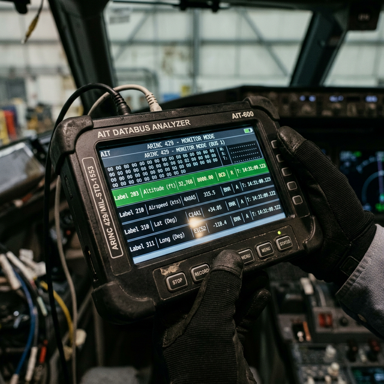

ARINC 429 word structure basics
Module Objectives
- Identify the total bit length of a standard ARINC 429 data word.
- Define the specific purpose of the Label and the SSM (Sign/Status Matrix) fields.
- Describe the voltage states of Tri-State Encoding.
Why Does This Matter?

You connect a $5,000 Ballard bus analyzer to an erratic ARINC 429 line and capture a live data word. The screen displays: Label 203 | SDI 00 | Data: 35,000 | SSM: Failure. What exactly is the analyzer telling you? Label 203 mathematically translates to Barometric Altitude. The data field says 35,000 feet. But the all-important SSM (Status) flags the data as a hardware "Failure". Without comprehending how this 32-bit word is structured, you are staring at an indecipherable matrix of raw hex numbers. Knowing the structure instantly isolates the fault to the transmitting air data computer, exonerating the wiring.
What You Need To Know
The 32-Bit Word Architecture
Every single ARINC 429 transmission is packaged into an exact 32-bit data word. These 32 bits are rigidly organized into five specific fields:
| Field Name | Bit Position | Technical Purpose |
|---|---|---|
| Label | Bits 1–8 | The core identifier (an 8-bit octal number) that tells receiving LRUs exactly what parameter the word carries (e.g., Label 100 = Selected Heading, Label 203 = Altitude). |
| SDI (Source/Destination) | Bits 9–10 | Source/Destination Identifier. Used in multi-system aircraft to specify which specific LRU the data applies to (e.g., "This heading is for Autopilot 2, not Autopilot 1"). |
| Data Field | Bits 11–29 | The actual raw engineering value (the numbers representing 35,000 feet, or 275 degrees, or Mach 0.82) encoded in BCD or BNR format. |
| SSM (Sign/Status Matrix) | Bits 30–31 | The critical health indicator. It reports the validity of the data. States include: Normal Operation, Functional Test, Hardware Failure, or No Computed Data (NCD). |
| Parity | Bit 32 | An Odd Parity bit used for instant mathematical error detection. If the bit count doesn't add up oddly, the receiver discards the corrupted word. |
ARINC 429 Logic Levels (Tri-State Encoding)
While basic digital systems utilize two states (5V and 0V), ARINC 429 utilizes three distinct differential voltage states (measured from Wire A to Wire B) to ensure absolute timing sync:
- Binary "1" (High): Differential voltage is +10V (Wire A is 10V higher than Wire B).
- NULL (Zero Volt Gap): Differential voltage is 0V. Used exclusively as the timing gap between individual bits or words.
- Binary "0" (Low): Differential voltage is -10V (Wire A is 10V lower than Wire B).
The Foundation of Binary
A bit (binary digit) is the absolute fundamental unit of all digital information — it physically exists only as an electrical 0 or 1. All modern avionics data, from high-def radar sweeps to simple switch positions, is ultimately transmitted, calculated, and stored purely as continuous streams of binary ones and zeros.
System Visualization
graph TD
A[Inside the 32-Bit ARINC 429 Word] --> B[Bits 1-8: LABEL]
A --> C[Bits 9-10: SDI]
A --> D[Bits 11-29: DATA]
A --> E[Bits 30-31: SSM]
A --> F[Bit 32: PARITY]
B -->|Label 204| G[Identifies Data as: Baro Correction]
D -->|Binary Encoded| H[Value: 29.92 inches Hg]
E -->|Status 00| I[Flag: Hardware Failure]
I --> J[Receiver ignores the 29.92 data because it is flagged invalid]
style E fill:#1e40af,stroke:#1e3a8a,stroke-width:2px,color:#fff
style J fill:#991b1b,stroke:#7f1d1d,stroke-width:2px,color:#fff
Interactive Lab
On The Job
When utilizing a databus analyzer on the flight deck, do not become overwhelmed by the torrent of numerical data. The first thing you must check is the Label — it tells you definitively what parameter you are looking at. The second, and most critical, thing you must check is the SSM. If the analyzer shows the SSM as "Failure" or "No Computed Data" (NCD), the source LRU has internally recognized an error and flagged its own data as invalid. The problem is definitively inside the transmitting box, not in your bus wiring.
Reference Terms
ARINC 429 Word Length
An ARINC 429 data word is 32 bits long, consisting of a label (8 bits), status/source destination identifier (2 bits), data field (19 bits), and sign/status matrix or parity bit (1 bit each).
ARINC 429 Logic Levels
ARINC 429 uses tri-state encoding: binary '1' = +10V (A high, B low); NULL = 0V; binary '0' = -10V (A low, B high). The voltage differential between the A and B lines determines the bit value.
Bit (Binary Digit)
A bit is the most fundamental unit of digital information, representing one of two possible states: 0 or 1. All digital data in avionics systems is stored, processed, and transmitted as groups of bits.
Binary Number System
The binary (base-2) number system uses only two digits — 0 and 1 — to represent all data in digital systems. Every digital avionics value (altitude, airspeed, heading) is ultimately stored and transmitted as a sequence of binary digits.
32-Bit Word
The rigidly formatted fixed-length data packet transmitted on an ARINC 429 bus, containing five distinct operational fields.
Label
The 8-bit octal identifier field (bits 1–8) defining exactly which engineering parameter the word is carrying.
SSM (Sign/Status Matrix)
The 2-bit health field (bits 30–31) indicating the absolute validity of the data: Normal, Test, Failure, or No Computed Data.
Tri-State Encoding
The +10V / 0V / -10V bipolar differential signaling architecture utilized geographically by ARINC 429 transceivers.
Assessment Check
Every ARINC 429 word is strictly 32 bits: the 8-bit Label identifies *what* the data is, the 19 bits carry the *value*, and the 2-bit SSM tells you if the value is *valid and trustworthy*. --- ---